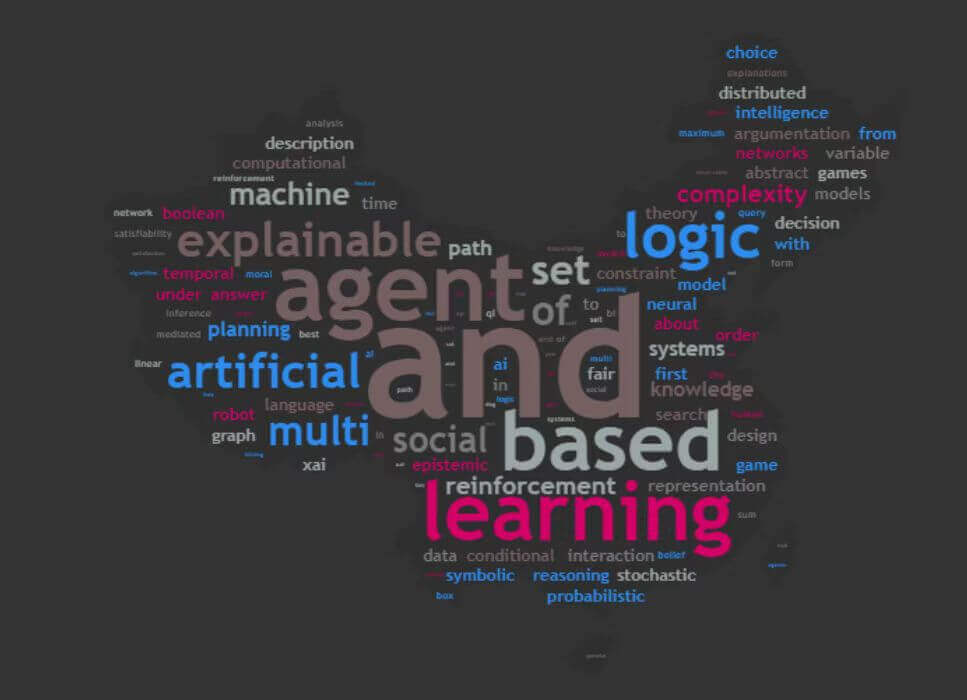

前言
3.14 听完师兄师姐汇报导师觉得我们听得一头雾水，于是给了我们看期刊整理论文的任务😐……
要求我们四个人整理完《中国计算机学会推荐国际学术会议和期刊目录》人工智能部分期刊和会议近三年的目录并从中总结出研究趋势。
这篇博客就胡扯点完成论文干的各种事吧。
正文
##《中国计算机学会推荐国际学术会议和期刊目录》
{% pdf pdf.pdf%}
爬虫
分完工后还是觉得要整理的论文特别多，于是整了个爬虫代码帮忙爬目录。
然后估计爬的太多了，爬久了就爬不动了 orz 忙活了几乎一天才爬到了一半内容 orz
然后就发现 dblp 这个网站本身就可以批量下载目录 orz 除了超过 1000 的和期刊数太多的期刊用爬虫可能更快些。

导出 Excel

将得到的 bibtex 文件一个一个地导入进 Zotero，然后一个一个地导出成 csv 文件。
接下来就是合并表格了，手动操作了几次后觉得太麻烦，整了个 python 代码帮我自动整理。
import os
import pandas as pd
path = r'D:\Study\1st-year-master\论文目录\Conf\A\NeurlPS'
save_file = path.split('\\')[-1]
data = pd.DataFrame(columns=['Publication Year', 'Author', 'Title'])
for index, file in enumerate(os.listdir(path)):
if('.csv' in file):
df = pd.read_csv(os.path.join(path,file))
data = data.append(df[['Publication Year', 'Author', 'Title']])
data.head
write = pd.ExcelWriter(os.path.join(path,save_file) + '.xlsx') # 新建 xlsx 文件。
data.to_excel(write, sheet_name='Sheet', index=False) # 写入文件的 Sheet1
write.save() # 这里一定要保存 这样每个期刊/会议近三年的目录就被整成一个 Excel 表格了😎！

统计词频
想用 python 把这些目录的词频统计出来，这样就分析当作研究趋势了😈！于是又一阵操作猛如虎：
import os
import pandas as pd
import re
path = r'D:\Study\1st-year-master\论文目录\xlsx'
save_path = r'D:\Study\1st-year-master\论文目录\freq'
for index, file in enumerate(os.listdir(path)):
if '.xlsx' in file:
df = pd.read_excel(os.path.join(path,file))
series = df['Title'].str.split(' ').explode().value_counts()
data = pd.DataFrame({'Word': series.index, 'Frequent': series.values})
write = pd.ExcelWriter(os.path.join(save_path, file) + '_frequent.xlsx') # 新建 xlsx 文件。
data.to_excel(write, sheet_name='Sheet' + str(index), index=False) # 写入文件的 Sheet1
write.save() # 这里一定要保存 结果统计出来的全是 “a”、“of”、“from” 之类的，一点参考意义也没有😅……
杰杰还搞了一个词频可视化，果然也都是一些没啥用的单词……不过突然感慨他的技术真的好全面……几乎什么都会一点。
{kind=link}

翻译
统计词频的计划失败后，想想还是手动检索论文吧。英文看的实在太难受，想了想有没有什么可以翻译 Excel 表格的方法……一开始想的很复杂，想先转成 markdown 文件然后传到博客上用浏览器帮忙翻译，在 Excel 表格调用有道的 API 直接翻译结果发现请求次数一上来就不让翻译了 balababala……最后伟哥说谷歌翻译可以直接上转 Excel 表格返回中文文档 orz

最后就得到了中文的论文标题目录！不知道为什么有些英文没有进行翻译。想着文件不多就手动把中英文标题整成一个表格了。
总结
最后大概看了一个晚上 + 一个上午吧……几万篇论文眼睛都快看花了💨，由于是主观判断研究趋势，感觉总结得也不是特别准，然后筛了点自己跟自己研究方向有点关系的论文。

最终结果
Jounrnals
A
IEEE Transactions on Pattern Analysis and Machine Intelligence
人体姿态估计、人体检测、3D 视觉、CNN、图像修复、点云、GAN、超分辨率、图像分割、视频
- Baselines extraction from curved document images via slope fields recovery
- Mask TextSpotter: An end-to-end trainable neural network for spotting text with arbitrary shapes
- Shape-matching GAN++: Scale controllable dynamic artistic text style transfer
- Unambiguous text localization, retrieval, and recognition for cluttered scenes
- Content and style aware generation of text-line images for handwriting recognition
- Towards end-to-end text spotting in natural scenes
- Deep generative modelling: A comparative review of VAEs, GANs, normalizing flows, energy-based and autoregressive models
- A geometrical perspective on image style transfer with adversarial learning
- GAN inversion: A survey
- Arbitrary shape text detection via segmentation with probability maps
- End-to-end handwritten paragraph text recognition using a vertical attention network
- Real-time scene text detection with differentiable binarization and adaptive scale fusion
- A survey on vision transformer
B
Data & Knowledge Engineering
建模、数据、解决某些实际问题
IEEE Transactions on Cybernetics
算法、信息安全、传统机器学习方法（马尔科夫链、支持向量机）
International Journal of Approximate Reasoning
模糊逻辑
Machine Learning
传统机器学习、强化学习
Transactions of the Association for Computational Linguistics
自然语言处理、语言学、BERT、Transformer
C
Applied Intelligence
解决某些实际问题、超分辨率、模式识别、医学、COVID-19（预测、检测）、3D 视觉、CNN、图神经网络、聚类、分类、情感识别
- Anchor-free multi-orientation text detection in natural scene images
Computer Speech & Language
语音识别、自然语言处理
Expert Systems
解决某些实际问题、医学、COVID-19、推荐系统
IET Computer Vision
人体姿态估计、人脸识别、目标检测、CNN、3D 视觉
- Stroke controllable style transfer based on dilated convolutions
- KText: Arbitrary shape text detection using modified K-Means
International Journal of Computational Intelligence and Applications
解决某些实际问题
International Journal of Uncertainty, Fuzziness and Knowledge-Based Systems
模糊逻辑
Machine Translation
机器翻译
Neural Computing and Applications
解决某些实际问题
- Hybrid HMM/BLSTM system for multi-script keyword spotting in printed and handwritten documents with identification stage
- SPN: short path network for scene text detection
- Robustly detect different types of text in videos
- Effective offline handwritten text recognition model based on a sequence-to-sequence approach with CNN-RNN networks
- Historical document image binarization via style augmentation and atrous convolutions
- Character-based handwritten text transcription with attention networks
Pattern Recognition Letters
模式识别（文字、医学、人体）、特征提取、GAN
- Compressing the CNN architecture for in-air handwritten Chinese character recognition
- LPR-Net: Recognizing Chinese license plate in complex environments
- An attention-based row-column encoder-decoder model for text recognition in Japanese historical documents
- Assessing similarity in handwritten texts
- Clustering online handwritten mathematical expressions
- Beyond visual semantics: Exploring the role of scene text in image understanding
- PMMN: Pre-trained multi-Modal network for scene text recognition
- RectiNet-v2: A stacked network architecture for document image dewarping
- Transformer-based approach for joint handwriting and named entity recognition in historical document
- Cross lingual handwritten character recognition using long short term memory network with aid of elephant herding optimization algorithm
- CE-text: A context-Aware and embedded text detector in natural scene images
Conf
A
Conference on Neural Information Processing Systems
数据集、图神经网络、算法、GAN、元学习、对比学习、强化学习、3D、Transformer
- OmniPrint: A configurable printed character synthesizer
- Are transformers more robust than CNNs?
- Diffusion models beat GANs on image synthesis
International Conference on Machine Learning
模型攻击、算法、游戏、生成模型、元学习、强化学习、Transformer、Wasserstein 距离、强化学习
B
Conference on Empirical Methods in Natural Language Processing
NLP、BERT、强化学习、文章生成摘要、文本生成、迁移学习、Transformer、数据集、COVID-19
- Cleaning dirty books: Post-OCR processing for previously scanned texts
International Conference on Automated Planning and Scheduling
路径规划、强化学习
Conference on Uncertainty in Artificial Intelligence
马尔科夫链、贝叶斯、无监督学习、蒙特卡洛、强化学习
C
Asian Conference on Computer Vision
贝叶斯、马尔可夫、3D 视觉、人体识别、GAN
- Accurate arbitrary-shaped scene text detection via iterative polynomial parameter regression
Conference on Computational Natural Language Learning
NLP
International Conference on Algorithmic Learning Theory
在线学习、强化学习
International Conference on Inductive Logic Programming
太杂太少太偏了...
International Joint Conference on Biometrics
安全、攻击、人脸识别
领域有关的论文
| 序号 | 名称 | 期刊/会议及其等级 | 资源 | 概要 |
|---|---|---|---|---|
| 1 | Baselines extraction from curved document images via slope fields recovery | Journals A | https://ieeexplore.ieee.org/document/8576546 | 提出了一种基于斜率场恢复的方法，用于从手持相机拍摄的失真文档图像中提取曲线基线。 |
| 2 | Mask TextSpotter: An end-to-end trainable neural network for spotting text with arbitrary shapes | Journals A | https://paperswithcode.com/paper/mask-textspotter-an-end-to-end-trainable https://paperswithcode.com/paper/mask-textspotter-an-end-to-end-trainable-2 | 研究了场景文本识别问题，该问题旨在同时检测和识别自然图像中的文本。 |
| 3 | Shape-matching GAN++: Scale controllable dynamic artistic text style transfer | Journals A | https://ieeexplore.ieee.org/document/9339900 https://openaccess.thecvf.com/content_ICCV_2019/papers/Yang_Controllable_Artistic_Text_Style_Transfer_via_Shape-Matching_GAN_ICCV_2019_paper.pdf | 探索了一个具有字形风格度控制的动态艺术文本风格转移的新问题。 |
| 4 | Unambiguous text localization, retrieval, and recognition for cluttered scenes | Journals A | https://paperswithcode.com/paper/unambiguous-text-localization-and-retrieval | 将杂乱场景图像的中间卷积表示顺序解码为一组不同的文本实例检测。 |
| 5 | Content and style aware generation of text-line images for handwriting recognition | Journals A | https://paperswithcode.com/paper/content-and-style-aware-generation-of-text | 提出了一种手写文本行图像的生成方法，该方法以视觉外观和文本内容为条件。 |
| 6 | Towards end-to-end text spotting in natural scenes | Journals A | https://paperswithcode.com/paper/towards-end-to-end-text-spotting-in-natural | 自然场景图像中的文本识别 |
| 7 | Deep generative modelling: A comparative review of VAEs, GANs, normalizing flows, energy-based and autoregressive models | Journals A | https://paperswithcode.com/paper/deep-generative-modelling-a-comparative | 生成模型的综述论文 |
| 8 | A geometrical perspective on image style transfer with adversarial learning | Journals A | https://www.researchgate.net/publication/343171440_A_Geometrical_Perspective_on_Image_Style_Transfer_With_Adversarial_Learning | 提出了一个通用框架，用于通过微分几何的视角分析带有对抗性学习的风格迁移。 |
| 9 | GAN inversion: A survey | Journals A | https://paperswithcode.com/paper/gan-inversion-a-survey | 涵盖了 GAN 反演的重要技术及其在图像恢复和图像处理中的应用。 |
| 10 | Arbitrary shape text detection via segmentation with probability maps | Journals A | https://paperswithcode.com/paper/arbitrary-shape-text-detection-via | 通过概率图提出了一种创新且稳健的基于分割的检测方法，用于准确检测文本实例。 |
| 11 | End-to-end handwritten paragraph text recognition using a vertical attention network | Journals A | https://paperswithcode.com/paper/end-to-end-handwritten-paragraph-text | 不受约束的手写文本识别 |
| 12 | Real-time scene text detection with differentiable binarization and adaptive scale fusion | Journals A | https://paperswithcode.com/paper/real-time-scene-text-detection-with-1 | 基于分割的场景文本检测方法在场景文本检测领域。提出了一个可微分二值化 (DB) 模块，该模块将二值化过程（后处理过程中最重要的步骤之一）集成到分割网络中 |
| 13 | A survey on vision transformer | Journals A | https://arxiv.org/abs/2012.12556 | Transformer 在计算机视觉领域的综述论文 |
| 14 | Anchor-free multi-orientation text detection in natural scene images | Journals C | https://link.springer.com/article/10.1007/s10489-020-01742-z | 自然场景图像中的文本检测 |
| 15 | Stroke controllable style transfer based on dilated convolutions | Journals C | https://ietresearch.onlinelibrary.wiley.com/doi/10.1049/iet-cvi.2019.0912 https://ietresearch.onlinelibrary.wiley.com/doi/pdfdirect/10.1049/iet-cvi.2019.0912 | 风格转换任务对 VGG19 模型进行了特殊优化，作者提出利用扩张卷积来提取纹理信息，使网络具有笔画可控性 |
| 16 | KText: Arbitrary shape text detection using modified K-Means | Journals C | https://ietresearch.onlinelibrary.wiley.com/doi/10.1049/cvi2.12052 https://ietresearch.onlinelibrary.wiley.com/doi/epdf/10.1049/cvi2.12052 | 基于分组字符的文本检测方法、K-Means |
| 17 | Hybrid HMM/BLSTM system for multi-script keyword spotting in printed and handwritten documents with identification stage | Journals C | https://www.researchgate.net/publication/335462030_Hybrid_HMMBLSTM_system_for_multi-script_keyword_spotting_in_printed_and_handwritten_documents_with_identification_stage | 提出了一种新的独立于脚本的方法，用于在印刷和手写的多脚本文档中识别单词 |
| 18 | SPN: short path network for scene text detection | Journals C | https://link.springer.com/article/10.1007/s00521-019-04093-0 | 场景文本检测 |
| 19 | Robustly detect different types of text in videos | Journals C | https://link.springer.com/article/10.1007/s00521-020-04729-6 | 视频文本检测（叠加文本、分层文本和场景文本） |
| 20 | Effective offline handwritten text recognition model based on a sequence-to-sequence approach with CNN-RNN networks | Journals C | https://link.springer.com/article/10.1007/s00521-020-05556-5 | 手写文本识别、使用 CNN 提取特征、RNN-LSTM 以编码视觉特征和解码手写图像中可用的字母序列。 |
| 21 | Historical document image binarization via style augmentation and atrous convolutions | Journals C | https://link.springer.com/article/10.1007/s00521-020-05382-9 | 使用神经网络方法对历史文献进行二值化 |
| 22 | Character-based handwritten text transcription with attention networks | Journals C | https://paperswithcode.com/paper/attention-networks-for-image-to-text | 使用在字符序列而非单词序列上训练的注意力编码器-解码器网络来处理手写文本识别 (HTR) 的任务 |
| 23 | Compressing the CNN architecture for in-air handwritten Chinese character recognition | Journals C | https://www.sciencedirect.com/science/article/abs/pii/S0167865519303502 | 提出了一种统一的算法来有效压缩 IAHCCR 的 CNN，引入到**空中手写汉字识别（IAHCCR）**中以获得更好的识别性能。 |
| 24 | LPR-Net: Recognizing Chinese license plate in complex environments | Journals C | https://www.sciencedirect.com/science/article/abs/pii/S0167865518306998 | 车牌识别网 (LPR-Net) 的端到端深度学习架构直接识别车牌 |
| 25 | An attention-based row-column encoder-decoder model for text recognition in Japanese historical documents | Journals C | https://www.sciencedirect.com/science/article/abs/pii/S0167865520301811 | 识别来自日本历史文档的多个文本行的输入图像，而无需对行进行显式分割。识别系统具有三个主要部分：特征提取器、行列编码器和解码器。 |
| 26 | Assessing similarity in handwritten texts | Journals C | https://www.sciencedirect.com/science/article/abs/pii/S0167865520303093 | 合成手写风格字体 |
| 27 | Clustering online handwritten mathematical expressions | Journals C | https://www.sciencedirect.com/science/article/abs/pii/S0167865521001148 | 在线手写数学表达式 |
| 28 | Beyond visual semantics: Exploring the role of scene text in image understanding | Journals C | https://arxiv.org/abs/1905.10622 | 联合使用场景文本和视觉通道来对图像进行稳健的语义解释 |
| 29 | PMMN: Pre-trained multi-Modal network for scene text recognition | Journals C | https://www.sciencedirect.com/science/article/abs/pii/S0167865521002622 | 提出了一种预训练的多模态网络 (PMMN)，它利用视觉和语言数据分别预训练视觉模型和语言模型，以学习特定于模态的知识，以进行准确的场景文本识别 |
| 30 | RectiNet-v2: A stacked network architecture for document image dewarping | Journals C | https://arxiv.org/abs/2102.01120 | 提出了一种端到端的 CNN 架构，该架构可以从作为输入的扭曲文档中生成无失真的文档图像 |
| 31 | Transformer-based approach for joint handwriting and named entity recognition in historical document | Journals C | https://arxiv.org/abs/2112.04189 | 在手写文档中提取相关信息 |
| 32 | Cross lingual handwritten character recognition using long short term memory network with aid of elephant herding optimization algorithm | Journals C | https://www.sciencedirect.com/science/article/abs/pii/S0167865522001490 | 手写字符识别 |
| 33 | CE-text: A context-Aware and embedded text detector in natural scene images | Journals C | https://www.sciencedirect.com/science/article/abs/pii/S0167865522001556 | 提出了一种名为 CE-Text 的轻量级上下文感知深度卷积神经网络 (CNN)，它适当地编码多级通道注意力信息以构建用于准确高效文本检测的判别特征图。 |
| 34 | OmniPrint: A configurable printed character synthesizer | Conf A | https://paperswithcode.com/paper/omniprint-a-configurable-printed-character | 独立印刷字符的合成数据生成器，适用于机器学习研究 |
| 35 | Are transformers more robust than CNNs? | Conf A | https://paperswithcode.com/paper/are-transformers-more-robust-than-cnns | 对 Transformer 和 CNN 进行公平和深入的比较，重点是稳健性评估。 |
| 36 | Diffusion models beat GANs on image synthesis | Conf A | https://paperswithcode.com/paper/diffusion-models-beat-gans-on-image-synthesis | 扩散模型可以实现优于当前最先进的生成模型的图像样本质量 |
| 37 | Cleaning dirty books: Post-OCR processing for previously scanned texts | Conf B | https://paperswithcode.com/paper/cleaning-dirty-books-post-ocr-processing-for | 语言模型的改进现在可以在不考虑扫描图像本身的情况下检测和纠正 OCR 错误 |
| 38 | Accurate arbitrary-shaped scene text detection via iterative polynomial parameter regression | Conf C | https://link.springer.com/chapter/10.1007/978-3-030-69535-4_15 | 针对任意形状的文本提出了一种基于参数化形状建模和回归方案的鲁棒场景文本检测方法 |